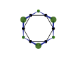

This simulaiton shows the structure of two 'dual' diamond lattices, called 'Dy' and 'Ti', and the pyrochlore lattices formed by placing sites on bond midpoints in the Anderson ice model fashion.
You can orbit and pan around the scene below with left and right clicks respectively. Drag the sliders around to adjust the opacity of the various parts that make up the rendering.
|
System Size
|
|
The point of this is to figure out the index convention for the pyrochlore lattice, so will likely not be particularly thrilling for anyone except for me.
The gist of it is this: The pyrochlore lattice can be viewed as the intersitial lattice formed by the bonds of the diamond lattice. The pyrochlore itself can be viewed as having four sublattices, corresponding to the four corners of the 'A', i.e. light green, tetrahedra. The diamond lattices are bipartite, and is appropriately coloured in two shades of green/purple.
A peculiarity of the pyrochlore lattice is that the centers of its hexagonal plaquettes (grey) form another pyrochlore lattice, with associated diamond lattice shown in purple.
The indexing scheme used internally is ``` cubic site -> fcc sublattice -> pyrochlore sublattice ``` This relies on the fact that all 'A' sites of the diamond lattice form an FCC lattice, which is much easier to conceptualise than the primitive unit cell. In particular, one can see that tiling out a single pyrochlore tetrahedron across all of the FCC sites (light green) will generate the full lattice.
The highly nontrivial thing here is how to index the neighbour pyrochlore sites of a given
plaquette, which is what the 'Annotate plaquettes' option is used for. In particular, every
plaquette may be given an orientation using the "A* to B*" (i.e. light purple to dark purple) vectors.
The choice of where to start indexing is not arbitrary: half of the pyrochlore sites represent "A to
B" (i.e. light green to dark green) sites, the other half are "B to A"; see below (read the hexagon
as being in plane, the dark green sites above the plane, and the light green as behind the plane)

The convention used here [R Y G C B P] = [0 1 2 3 4 5] is such that the even members
red, green and blue point to "A to B" pyrochlore sites. (note that a site is only "A to B" relative
to a plaquette, it cannot be a global classification because the pyrochlore lattice is not
bipartite). This matters if your Hamiltonian treats the A and B sites as distinct, which they are on
the breathing pyrochlore lattice.